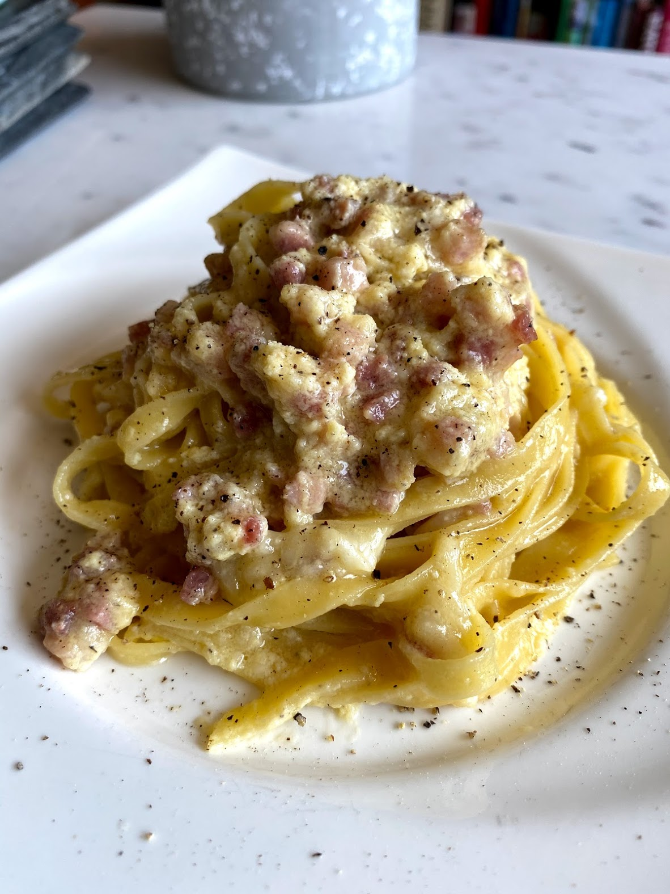

Pasta is a food known throughout the world, as is the carbonara sauce, which includes eggs, bacon, black pepper and Pecorino Romano cheese. Which leads us to wonder...why is cream usually added to this dish? The truth is that it was never included in the original recipe, but little by little it has evolved, and, outside of Italy, it is very famous.
The history of pasta carbonara has several versions, like everything. One of them is that carbonara has a wartime origin, we go back to the Second World War, a time when the British troops were tired of eating the typical fried eggs with bacon, and asked for another recipe with those ingredients.
400 grams of spaghetti
100 grams of smoked pancetta or bacon
400 grams of milk cream or liquid cream
3 egg yolks (one for each guest)
1 tablespoon of butter
1 medium onion
2 cloves of garlic
300 grams of parmesan cheese
1 pinch of salt
1 pinch of black pepperv

Before starting to make this Italian spaghetti carbonara recipe, the first thing you have to do is get all the ingredients ready to prepare our delicious pasta dish.
Subsequently, peel and finely chop the onion. And then you have to brown it in a tablespoon of butter.
Next, cut the smoked bacon or bacon into strips and crush the previously peeled garlic.
Then bring these two ingredients of the original spaghetti carbonara to the heat along with the onion and fry.
Next, boil the spaghetti in plenty of salted water. Cooking time will depend on the type of pasta, so check the manufacturer's recommendations on the packaging.
Separately, mix the egg yolks with 100 grams of Parmesan cheese that we have prepared and season with salt and pepper.
Add the heavy cream to the sautéed spaghetti carbonara with egg and leave it on low heat for 5 minutes to continue preparing the carbonara sauce.The original carbonara sauce does not contain cream or heavy cream, it is made only with eggs but I have included it here because we love it that way at home.
After that time, turn off the heat and add the yolk mixture to the sauce, stir quickly and immediately mix with the boiled pasta.
Enjoy these spaghetti carbonara accompanied with the rest of the grated Parmesan cheese! And if you like Italian pasta dishes, be sure to try the pesto sauce with pine nuts or the famous arrabiata sauce.